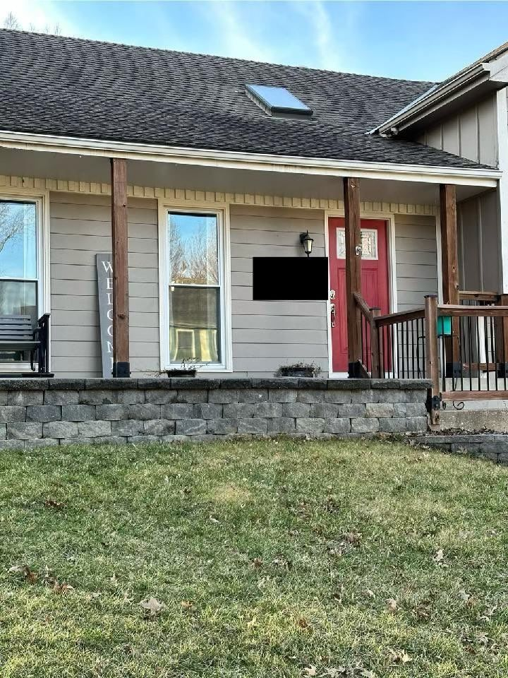

What Our Clients Say
We don't write our own reviews — our clients do. And they write long ones. Read what KC metro homeowners say about working with Uprise.
Real Reviews from Real Homeowners
These reviews are from homeowners across the KC metro who hired Uprise for kitchens, bathrooms, basements, decks, and exteriors.
"Uprise was very responsive to my needs and went above and beyond to deliver my outdoor oasis. They repainted the exterior of my house and my new deck is my favorite part of the house now. Very transparent about the price, the changes, and the timeline throughout the entire project."
"We used Uprise to completely remodel our master bathroom. From the initial consultation through the finishing touches, their team was professional, organized, and delivered exactly what was promised. Communication was excellent throughout, and the quality speaks for itself."
"I've used Uprise on multiple projects now. Every single time, the attention to detail is incredible. They treat your home like their own. I won't call anyone else."
"Jorge and his team did our entire basement finish — framing, electrical, drywall, flooring, a wet bar, and a full bathroom. They pulled every permit, scheduled every inspection, and finished on time. The basement looks incredible. We use it every single day now."
"We hired Uprise for our kitchen remodel and could not be happier. They completely transformed the space — new cabinets, quartz countertops, backsplash, and lighting. The crew was respectful of our home, cleaned up every day, and the final result was better than what we imagined. Worth every penny."
"Uprise built us a beautiful composite deck with built-in lighting and new railings. They also replaced a section of rotted siding we didn't even know about until they started the project — and they showed us before doing the repair. No hidden charges. Just honest work."
"This is the third time we've used Uprise. First was a bathroom remodel, then our kitchen, and now the basement. Every single project was completed on schedule, on budget, and to a standard that exceeds what we expected. Jorge keeps you updated every step of the way."
"Necesitabamos remodelar nuestra cocina y bano, y Uprise hizo un trabajo increible. El equipo habla espanol, lo cual fue muy importante para nosotros. Todo fue explicado claramente, el trabajo fue limpio, y el resultado final es hermoso. Los recomendamos completamente."
"Had our entire exterior painted — a two-story home in De Soto. Uprise's crew was efficient, thorough, and the prep work was outstanding. They scraped, primed, caulked every seam, and the paint job looks flawless. Our neighbors keep stopping to ask who we hired."
"We were nervous about a full kitchen gut. Uprise walked us through everything during the consultation — scope, materials, timeline, permits, all of it. They even showed us photos of similar projects they'd completed. The remodel took 8 weeks and the result is stunning."
"Uprise converted our guest bathroom from a tub to a walk-in tile shower with a bench seat. The tile work is beautiful — perfectly aligned, no lippage, clean grout lines. They also replaced the vanity, mirror, and lighting. It feels like a completely different room."
"We got three quotes for a new fence and pergola. Uprise was the only contractor who showed up with a detailed written proposal — not a napkin estimate. The work was completed in under two weeks, looks fantastic, and they handled all the permits. Highly recommend."